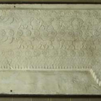

Skip to main content
Search
About
Navigating this Site
The Catalogue
Contact Us
History
Plaster Casts at GMU
The Last Casts
Part I: The Viewing
Part II: Auction "Chi"
Part III:Picking up the Pieces
Part IV: Arrival and Parting Thoughts
Casts
Cast Locations
Research
Undergraduates
Graduates
Acknowledgements
Collections
Student Exhibits
Browse Items (1 total)
Browse All
Browse by Tag
Search Items
Browse Map
Collection: Art of the Ancient Near East
Cast no.01
